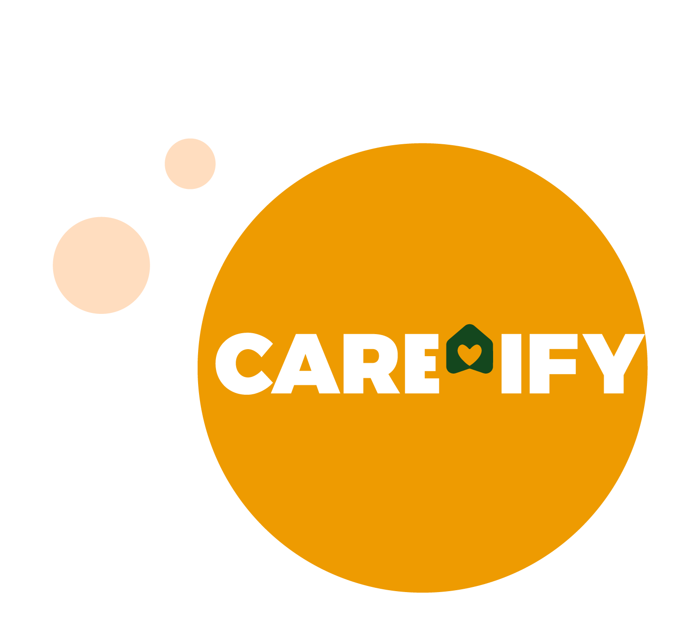

Get In Touch!
Frequently Asked Questions
A mobile application/desktop app designed to help the elderly to manage their health and well-being, offering features like medication reminders, appointment scheduling, health record access, and emergency assistance.
If you've forgotten your password, go to the login screen and select "Forgot Password?" You'll be prompted to enter your email address to receive reset instructions.
Please ensure your app and your browser is updated to the latest version. If problems persist, contact our support team through the app's contact form or by email.
We prioritize your privacy and security. All data in Care-ify is encrypted and protected according to the highest industry standards, including compliance with GDPR and HIPAA where applicable.
Your health information is private and secure. You have full control over who can access your data. It is only shared with healthcare providers or family members if you grant permission.
Yes, Care-ify is designed to allow caregivers to manage the health and appointments of their loved ones. You can create multiple profiles for easy management.
We welcome your feedback and suggestions! Please use the contact form within the app or email us directly to share your thoughts.
Click on the to-do list tile. Then click 'Add Task'. Add the date, the time and a short summary of what needs to be done, then click 'Add'. It will all be done and you should be able to see it when you click into the to-do list.